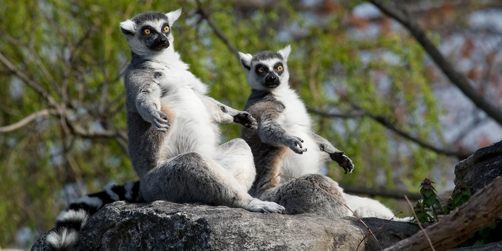
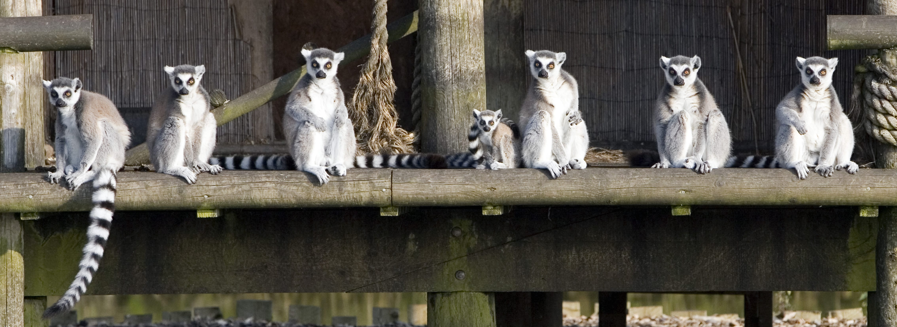
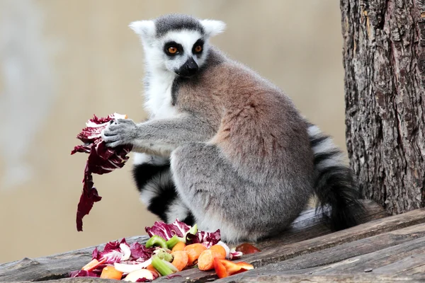
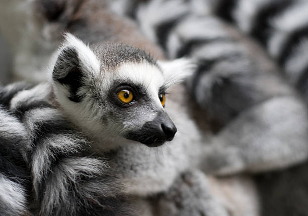
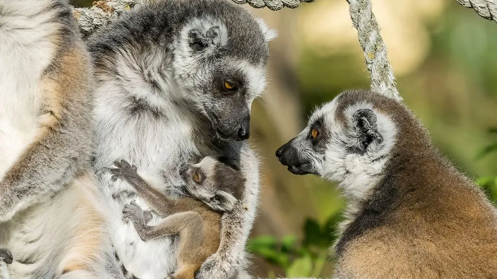

RING TAILED LEMMUR
-

Ring tailed lemurs are probably the most well-known of all the different types of lemur because King Julien from the Madagascar films is one. Ring tailed lemurs spend more than a third of their time on the ground, more than any other lemur species.
-

The ring-tailed lemur is highly social, living in groups—known as "troops"—of up to 30 individuals. It is also a female-dominant species, a commonality among lemurs. To keep warm and reaffirm social bonds, groups will huddle together. Mutual grooming is another vital aspect of lemur socialization (as with all primates), reaffirming social and familial connections, while also helping rid each other of any potential insects.
-

Ring tailed lemurs mostly eat fruit and leaves. They really like the leaves of the tamarind tree. When it's available, half of what they eat will be tamarind leaves. The food they eat is different to other lemurs because of the amount of time they spend on the ground. They will eat bark, earth, small insects and spider webs.
-

Male ring tailed lemurs put smells, from glands in their bottoms, on their tail and wave it at rivals. It’s known as ‘stink fighting’!
-

Ring tailed lemurs usually have just one baby at a time, although they can have twins. Mothers carry their babies on their fronts for the first couple of weeks and then on their backs when the babies are a bit stronger.